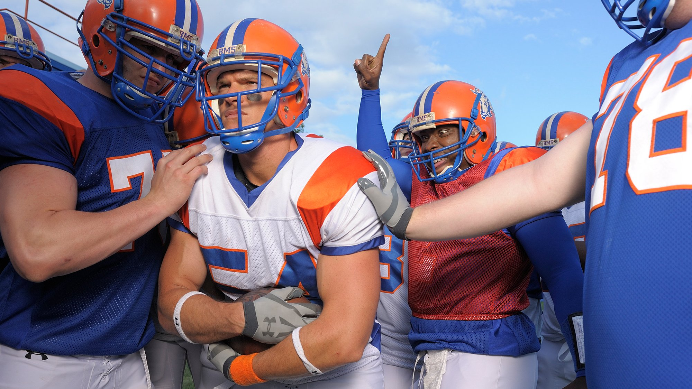

Blue Mountain State é uma série de televisão americana de comédia que foi exibida no Paramount Network. Foi produzida pela Lionsgate Television e desenvolvida por Chris Romano e Eric Falconer. Conta a hilariante história da universidade fictícia Blue Mountain State e seu time de futebol americano The Mountain Goats. Inclui temas como sexo, consumo excessivo de álcool e drogas, festas selvagens e trote.